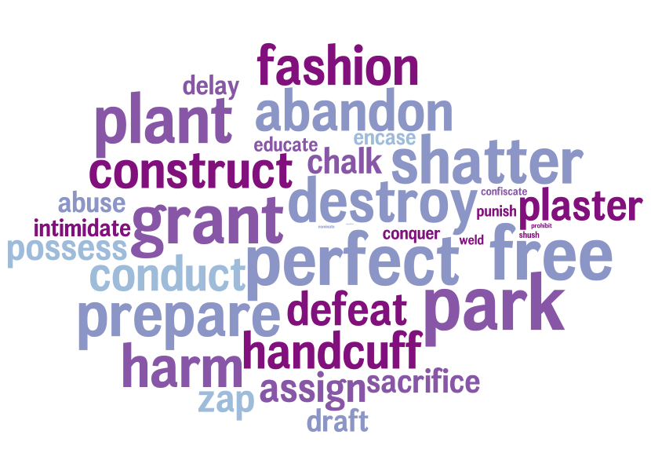
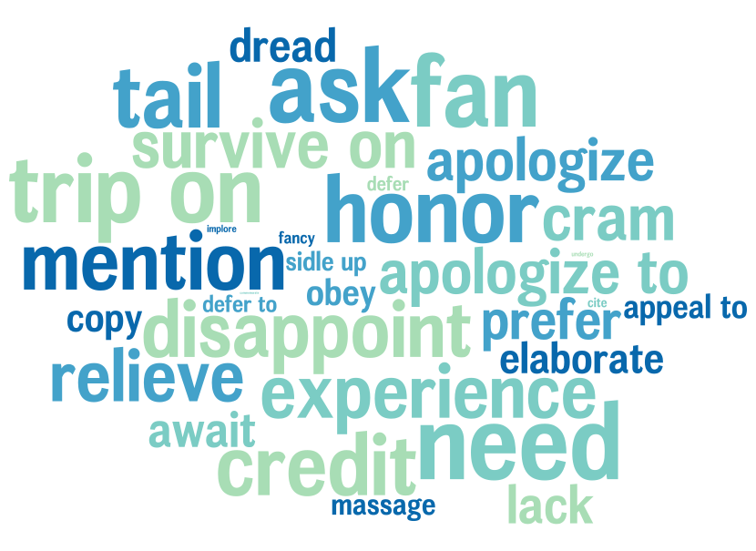
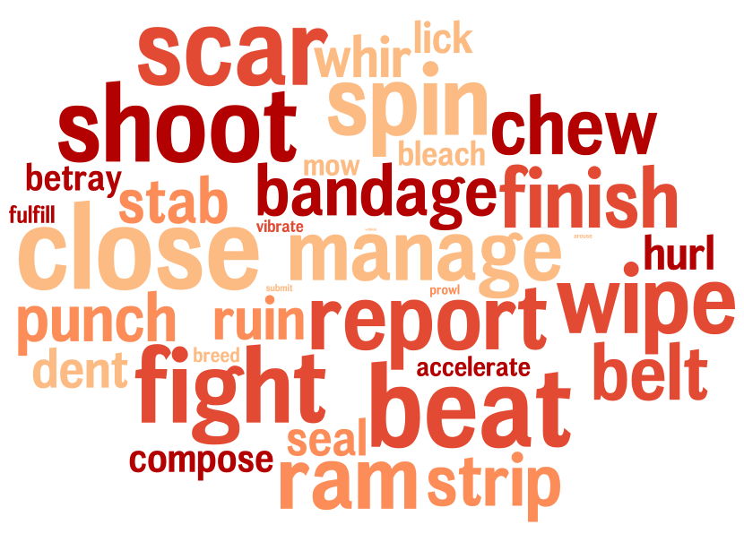
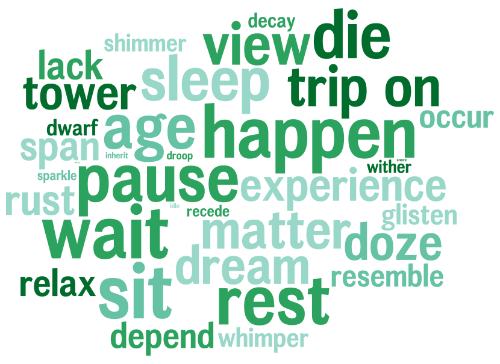

_Quick links_
- [⬇️ Download the frames](data/FramesAgencyPower.zip)
- [📄 Read the paper](../pdfs/sap2017connotation.pdf)
----
How a movie character is written or portrayed influences a viewer's impression, which can in turn influence people's stereotypes on gender norms. We develop a computational framework, called *connotation frames*, to measure the *power* and *agency* given to characters in movies. Our new tool allows for in-depth analyses of subtle nuances in how characters are written about in movie screenplays.
#### What are connotation frames?
Connotation frames measure the implications verbs have on the characters they describe. For instance, someone who "*accepts*" something is implied to be more passive (low agency) than someone who "*assesses*" things (high agency). We collect the following two connotations for roughly 2000 verbs, through crowdsourcing:
- Power connotations capture implied authority differentials between the subject (agent) and the object (theme) of the verb. For instance, in the sentence "*he implored the tribunal to show mercy*", "*he*" is implied to be in a submissive position compared to "*the tribunal*", as signaled by the verb "*implore*". Conversely, in "*he demanded mercy from the tribunal*", "*he*" is described with much more authority over "*the tribunal*".
| | |
:----------------------------------:|:----------------------------------:
|  |  |
| *Agent-empowering* | *Theme-empowering* |
- Agency connotation frames uncover the implied agency given to the subject by the verb. For example in "*she searched for her prince*", "*she*" is the driver of her own life (high agency), which isn't the case in "*she waited for her prince*".
| | |
:----------------------------------:|:----------------------------------:
|||
| *Positive agency* | *Negative agency* |
#### How do we study movie characters?
In our project, we look at a set of ~700 modern movie [screenplays](https://en.wikipedia.org/wiki/Screenplay), which contain both scene descriptions and stage direcions for characters ("narratives") and the words spoken by characters ("dialogue"). Screenplays are neatly formatted, allowing us to easily find which lines are spoken by or written about specific characters in the movie. Using a simple gender identification tool, we find whether characters in the movie were male or female.*
We then apply our connotation frames tool to these movie characters, giving each character *connotation power scores* and *connotation agency scores*. For instance, think of *connotation low power score* as measuring the amount of power displayed in the screenplay for a character. With scores computed for all characters, we used standard statistical tools to uncover bias in how much power and agency female and male characters have.
**We acknowledge that this is over-simplifying the construct of gender, which lies on a spectrum.*
#### How much bias is there in our movies?
Through our statistical analyses, we found that women were consistently portrayed in more submissive positions and with less agency than men, in ways that reinforce gender stereotypes. We also find that men tend to speak more in imperative sentences (e.g., "*Bring me my horse.*"), and women tend to hedge their statements more (e.g., "*Maybe I am wrong.*").
We also compare our connotation scores for each movie to its [Bechdel rating](http://bechdeltest.com/), finding that movies with high-agency, plot-driving women tend to fail the Bechdel test. Perhaps this is because movies are less likely to have many high-agency women (similar observations inspired the [Mako Mori test](https://www.dailydot.com/parsec/fandom/mako-mori-test-bechdel-pacific-rim/)).
#### Cite the paper
```
@inproceedings{sap2017connotation,
title={Connotation Frames of Power and Agency in Modern Films},
author={Sap, Maarten and Prasetio, Marcella Cindy and Holtzman, Ari and Rashkin, Hannah and Choi, Yejin},
booktitle={EMNLP},
year={2017},
url={https://www.aclweb.org/anthology/D17-1247}
}
```